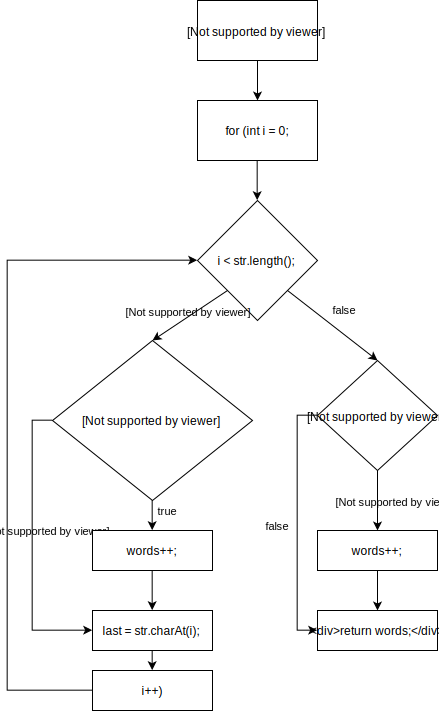

Structural-Based Testing
In a previous chapter, we discussed how to test software using requirements as the main artifact for guidance. In this chapter, we will use a different source of information to create tests: the source code itself. We can call the set of techniques that use the structure of the source code as a way to guide the testing, structural-based testing techniques.
Understanding structural-based testing techniques boils down to understand the different coverage criteria. These coverage criteria are highly related to test coverage, a concept that many developers know. By test coverage, we mean the amount (or percentage) of production code that is exercised by the tests.
We will cover the following coverage criteria:
- Line coverage (and statement coverage)
- Block coverage
- Branch/Decision coverage
- Condition (Basic and Condition+Branch) coverage
- Path coverage
- MC/DC coverage
Watch a summary of one of our lectures in structural testing!
Line (and statement) coverage
As the name suggests, when determining the line coverage, we look at the amount of lines of code that are covered by the tests (more specifically, by at least one test).
See the following example: We consider a piece of code that returns the points of the person that wins a game of Black jack.
public class BlackJack {
public int play(int left, int right) {
1. int ln = left;
2. int rn = right;
3. if (ln > 21)
4. ln = 0;
5. if (rn > 21)
6. rn = 0;
7. if (ln > rn)
8. return ln;
9. else
10. return rn;
}
}
The play(int left, int right) method receives the amount of points of two players and returns the value like specified.
Now let's make two tests for this method.
public class BlackJackTests {
@Test
public void bothPlayersGoTooHigh() {
int result = new BlackJack().play(30, 30);
assertThat(result).isEqualTo(0);
}
@Test
public void leftPlayerWins() {
int result = new BlackJack().play(10, 9);
assertThat(result).isEqualTo(10);
}
}
Try to follow each test method and mark which lines of the production code are exercised by it.
The first test executes lines 1-7, 9, and 10 as both values are higher than 21 and when the program arrives at line 7.
ln equals rn so the statement ln > rn is false.
This means that 9 out of the 10 lines are covered and the line coverage is (after all, the test
exercised 9 out of the 10 lines of that method).
Line 8 is therefore the only line that the first test does not cover.
The second test, leftPlayerWins, complements the first test, and executes lines 1-3, 5, 7 and 8.
So when we execute both of our tests, the line coverage is .
More formally, we can compute line coverage as:
Note: Defining what constitutes a line is up to the tester. One might count, for example, the method declaration as a code line. We prefer not to count the method declaration line.
Why is line coverage a bit problematic?
Using lines of code as a way to determine line coverage is a simple and straightforward idea. However, counting the covered lines is not always a good way of calculating the coverage. The amount of lines in a piece of code is heavily dependent on the programmer that writes the code. In Java, for example, you can often write a whole method in just one line (for your future colleagues' sake, please don't). In that case, the line coverage would always be if you test the method.
We are again looking at Black Jack example.
The play method can also be written in 6 lines, instead of 10:
public int play(int left, int right) {
1. int ln = left;
2. int rn = right;
3. if (ln > 21) ln = 0;
4. if (rn > 21) rn = 0;
5. if (ln > rn) return ln;
6. else return rn;
}
The same leftPlayerWins test covered lines in the first play method.
Now, it covers lines 1-5, so lines.
The line coverage went up from to , while testing the same method with the same test.
This is definitely not ideal.
We need a better representation for source code. One that is independent of the developers' personal code styles.
Note: Some coverage tools measure coverage as statement level. Statements are the unique instructions that your JVM, for example, executes. This is a bit better, as splitting one line code in two would not make a difference, but still not good enough.
Blocks and Control-Flow Graph
A Control-Flow Graph (or CFG) is an agnostic representation of a piece of code. It consists of basic blocks, decision blocks, and arrows that connect these blocks.
A basic block is composed of "all statements that are executed together", with no if or for conditions that might create different branches in the code. Basic blocks are often represented with a square. A decision block, on the other hand, represents all the statements in the source code that can create different branches. Decision blocks are often represented as diamonds.
We then connect the blocks according to the flow of the program. A basic block has always a single outgoing edge; a decision block has always two outgoing edges (where you go in case of the decision being evaluated to true, and where you go in case the decision being evaluated to false).
You can see an example of a CFG below.
We write a program for the following problem: Given a sentence, you should count the number of words that end with either an "s" or an "r". A word ends when a non-letter appears.
public class CountLetters {
public int count(String str) {
1. int words = 0;
2. char last = ' ';
3. for (int i = 0; i < str.length(); i++) {
4. if (!Character.isLetter(str.charAt(i))
5. && (last == 's' || last == 'r')) {
6. words++;
7. }
8. last = str.charAt(i);
9. }
10. if (last == 'r' || last == 's')
11. words++;
12. return words;
}
}
The corresponding CFG:

Note that we split the for-loop into two blocks (variable initialization, and increment) and a decision.
Every decision has one outgoing arrow for true and one for false, indicating what the program will do based on the condition.
return words; does not have an outgoing arrow as the program stops after that statement.
Note how agnostic this CFG representation is. You can even build CFGs of program written in different languages. They might even look the same!
record a video explaining how to build CFGs
Block coverage
We can use blocks as a coverage criteria, in the same way we did with lines: instead of aiming at covering 100% of the lines, we aim at covering 100% of the blocks.
The formula to measure block coverage is similar:
Note that blocks do not depend on how the developer wrote the code. Thus, we will not suffer from having different coverage numbers just because the developer wrote the code in a different way.
For the CountLetters program, a test T1 = "cats and dogs" exercises all the blocks, and thus,
reaches 100% block coverage.
Branch/Decision coverage
Complex programs often use a lot of conditions (e.g. if-statements). When testing these programs, aiming at 100% line or block coverage might not be enough to cover all the cases we want. We need a stronger criteria.
Branch coverage works the same as line and statement coverage. This time, however, we do not count lines or blocks, but the number of possible decision outcomes our program has. Whenever you have a decision block, that decision block has two outcomes. We consider our test suite to achieve 100% branch coverage (or decision coverage, as both terms mean the same) whenever we have tests exercising all the possible outcomes.
In practice, these decisions (or branches) are easy to find in a CFG. Each arrow with true of false (so each arrow going out of a decision) is a branch.
Let's aim at 100% branch coverage for the count method above.
public class CountLettersTests {
@Test
public void multipleMatchingWords() {
int words = new CountLetters()
.count("cats|dogs");
assertEquals(2, words);
}
@Test
public void lastWordDoesntMatch() {
int words = new CountLetters()
.count("cats|dog");
assertEquals(1, words);
}
}
The first test (by providing cats|dogs as input) covers all the branches in the left part of the CFG.
At the right part, it covers the top false branch, because at some point i will be equals to str.length().
Then the word dogs ends with an s, so it also covers the true branch on the right side of the CFG.
This gives the test branch coverage.
The only branch that is not covered is the false branch at the bottom right of the CFG.
This branch is executed when the last word does not end with an r or an s.
The second test executes this branch (by giving the word cats|dog) so the two tests together have a branch/decision coverage of .
Note: In the video, we use squares to represent decision blocks. We did it just because otherwise the control flow graph would not fit in the video. When doing control flow graphs, please use diamonds to represent decision blocks.
(Basic) condition coverage
Branch coverage gives two branches for each decision, no matter how complicated this decision is.
When a decision gets complicated, i.e., it contains more than one condition like a > 10 && b < 20 && c < 10,
branch coverage might not be enough to test all the possible outcomes of all these decisions. Look at this example:
a test T1 (a=20, b=10, c=5) and a test T2 (a=5, b=10, c=5) already covers this decision block. However, look how many
other possibilities we have for this branch to be evaluated to false (e.g., T3 (a=20, b=30, c=5), ...).
When using condition coverage as criteria, we split the decisions into single conditions. Instead of having one big decision block with the entire condition, we have multiple decision blocks, each one of one condition only. In practice, now we will exercise each condition separately, and not only the "big decision block".
As soon as you have the new CFG, it works the same as branch coverage. The formula is basically the same, but now we just have more decision outcomes to count:
We achieve 100% condition coverage whenever all the outcomes of all the conditions in our program have been exercised.
In other words, whenever all the conditions have been true and false at least once.
Once again we look at the program that counts the words ending with an "r" or an "s". Instead of branch coverage, we are interested in the condition coverage that the tests give. We start by building the more fine-grained CFG:

You can see that this new CFG has way more decision blocks than the previous one.
The first test we wrote before now covers 7 conditions and the total amount of conditions is 12. So the condition coverage is now: . This is significantly less than the branch coverage, so we need more tests to get to 100% condition coverage.
Condition coverage is an improvement over the branch coverage. However, we will try to do even better in the next section.
Condition + Branch coverage
Let's think carefully about condition coverage. If we only focus on exercising the individual conditions themselves, but do not think of the overall decision, we might end up in a situation like the one below.
Imagine a if(a > 10 && b > 20) condition. A test T1 = (20, 10) makes the first condition a > 10 to be true, and the
second condition b > 20 to be false. A test T2 = (5, 30) makes the first condition to be false, and the second condition to
be true. Note that T1 and T2 together achieve 100% basic condition coverage; after all, both conditions have been exercised
as true and false. However, the final outcome of the entire decision was also false! This means, we found a case where
we achieved 100% basic condition coverage, but only 50% branch coverage! This is no good. This is way we called it
basic condition coverage.
In practice, whenever we use condition coverage, we actually do branch + condition coverage. In other words, we make sure that we achieve 100% condition coverage (i.e., all the outcomes of all conditions are exercised) and 100% branch coverage (all the outcomes of the decisions are exercised).
From now on, whenever we mention condition coverage, we mean condition + branch coverage.
record a video showing, in a explicit way, the difference between basic condition coverage and full condition coverage
Path coverage
Finally, with condition coverage, we looked at each condition individually. This gives us way more branches to generate tests. However, note that, although we are testing each condition to be evaluated to true and to false, this does not ensure that we are testing all the paths that a program can have.
Path coverage does not consider the conditions individually; rather, it considers the (full) combination of the conditions in a decision. Each of these combinations is a path. You might see a path as a unique way to traverse the CFG. The calculation is the same as the other coverages:
See the following example.
In this example we focus on a small piece of the count method:
if (!Character.isLetter(str.charAt(i))
&& (last == 's' || last == 'r')) {
words++;
}
The decision of this if-statement contains three conditions and can be generalized to (A && ( B || C)), with A = !Character.isLetter(str.charAt(i)), B = last == 's' and C = last == 'r'.
To get path coverage, we would have to test all the possible combinations of these three conditions.
We construct a truth table to find the combinations:
| Tests | A | B | C | Outcome |
|---|---|---|---|---|
| 1 | T | T | T | T |
| 2 | T | T | F | T |
| 3 | T | F | T | T |
| 4 | T | F | F | F |
| 5 | F | T | T | F |
| 6 | F | T | F | F |
| 7 | F | F | T | F |
| 8 | F | F | F | F |
This means that, for full path coverage, we would need 8 tests just to cover this if-statement. That is quite a lot for just a single statement!
By thinking about the path coverage of our test suite, we can come up of quite some good tests. The main issue is that achiving 100% path coverage might not always be feasible. The number of combinations might be too big! The amount of tests needed for full path coverage will grow exponentially with the amount of conditions in a decision.
MC/DC (Modified Condition/Decision Coverage)
Modified condition/decision coverage (MC/DC from now on), looks at the combinations of conditions like path coverage does. However, instead of aiming at testing all the possible combinations, we take a certain selection process in order to identify the "important ones". Clearly, the goal of focusing on the important ones is to tackle the large amount of test cases that one needs to devise when aiming at 100% path coverage.
The idea of MC/DC is to simply exercise each condition in a way that it can, independently of the other conditions,
affect the outcome of the entire decision. This might sound a bit complicated, but the example will clarify it.
And interestingly, if our conditions have only a binary outcome, which is our case here, as conditions
either return true or false, the number of tests we will need for that is always "only" N+1, where N is the number of conditions in the program.
is definitely smaller than !
Again, to devise a test suite that achieves 100% MC/DC coverage, we should select combinations of inputs where all the conditions can independently affect the outcome.
Let's do it in a mechanical way. See the example below.
Let's test the decision block we have in the previous example, with its corresponding truth table. Note how each row represents a test . In this case, tests go from 1 to 8, as we have 3 decisions, and is 8:
| Tests | A | B | C | Outcome |
|---|---|---|---|---|
| 1 | T | T | T | T |
| 2 | T | T | F | T |
| 3 | T | F | T | T |
| 4 | T | F | F | F |
| 5 | F | T | T | F |
| 6 | F | T | F | F |
| 7 | F | F | T | F |
| 8 | F | F | F | F |
Our goal will be to select , in this case, , tests. We go condition by condition. In this case, we start with selecting the pairs of combinations (or tests) for condition A:
In test 1: A, B and C are all true and the outcome is true as well. We should look for another test in this table, where the value of A is flipped in comparison to test 1, but all others (B and C) are the same. In this case, we should look for a row where A=False, B=True, C=True. We find it in test 5. Now, look at the outcome of test 5: it's false. This means we just found a pair of tests, T1 and T5, where A is the only condition that changed, and the outcome also changed. This means, we just found a pair of tests where A independently affect the outcome. Let's keep the pair {T1, T5} in our list of tests.
Now we look at the next test. In test 2, A is again true, B is true, and C is false. We repeat the process: we search for a test where A is flipped in comparison to test 2, but B and C are the same (B=True, C=False). We find test 6. The outcome from test 6 (false) is not the same as the outcome of test 2 (true), so this means that the pair of tests {T2, T6} is also able to independently show how A can affect the final outcome.
We repeat the process for test 3. We will find that the pair {T3, T7} is also a good one.
We repeat the process for test 4 (A=True, B=False, C=False). Its pair is test 8 (A=False, B=False, C=False). However, note that the outcome of both tests is false. This means that the pair {T4, T8} does not really show how A can independently affect the outcome; after all, A is the only thing that changes, but the outcome is still the same...
We now repeat it up to test 8. We will not find any other suitable pair.
Now that we are done with condition A, we can go to condition B. And we repeat the same process, but now flipping the input of B, and keeping A and C the same.
For T1 (A=true, B=true, C=true), we search for a test where (A=true, B=false, C=true). We find test 3. However, the outcome is the same, so the pair {T1, T3} is not a good one to show the independence of B.
You will only find the pair {T2, T4} for combition B.
The final condition is C. Here also only one pair of combinations will work, which is {T3, T4}. (To practice, you should do the entire process!)
We now have all the pairs for each of the conditions:
- A: {1, 5}, {2, 6}, {3, 7}
- B: {2, 4}
- C: {3, 4}
Now we are ready to select the combinations that we want to test. For each condition (A, B, and C), we have to have at least one of the pairs. Moreover, we want to minimize the total amount of tests, and we know that we can do it with N+1 tests.
We do not have any choices with conditions B and C, as we only found one pair for each. This means that we have to test combinations 2, 3 and 4.
Now we need to make sure to cover a pair of A. To do so we can either add combination 6 or 7. Both are good. Let's pick, for example, 6. (Note: You can indeed have more than one set of tests that achieve 100% MC/DC; all solutions are equally valid and good!)
The combinations that we need for 100% MC/DC coverage are {2, 3, 4, 6}. These are only 4 combinations/tests we should focus. This is a lot better than the 8 tests we needed for the path coverage.
Indeed, in the example above, we saw that we need fewer tests when using MC/DC instead of path coverage.
Loop boundary adequacy
What to do when we have loops? After all, whenever there is a loop, the block inside of the loop might be executed many times; this would make testing more complicated.
Think of a while(true) loop. It can go forever. If we wanted to be rigorous about it, we would have to test the program
where the loop block is executed one time, two times, three times, ... Imagine a for(i = 0; i < 10; i++) loop with a break inside
of the body. We would have to test what happens if the loop body executes one time, two times, three times, ..., up to ten times.
It might be impossible to exhaustively test all the combinations!
What trade-off can we make? And, more especifically, for unbounded loops, where we do not really know how many times it will be executed. We can define a loop boundary adequacy criteria:
A test suite satisfies this criterion if and only if for every loop:
- A test case exercises the loop zero times
- A test case exercises the loop once
- A test case exercises the loop multiple times
Pragmatically speaking, the main challenge is devising tests where the loop is exercised multiple times. Devising tests that can indeed explore the space efficiently requires a good understanding of the program itself. Our tip is for you to make a little use of specification-based techniques here. If you understand the specs, you might be able to devise good tests for the particular loop.
record a video about the loop boundary adequacy
Criteria subsumption
You might have noticed that, the more criteria we studied, the more "rigorous" they became. We started our discussion with line coverage. Then we discussed branch coverage, and we noticed that we could generate more tests if we focused on branchs. Then, we discussed branch + condition coverage, and we noticed that we could generate even more tests if we also focused on the conditions. And we kept doing that up to here.
There is indeed a relationship between all these criteria. Some strategies subsume other strategies. More formally, a strategy X subsumes strategy Y if all elements that Y exercises are also exercised by X. You can see in the figure below how the relationship among all the coverage criteria we studied.
You can see that, for example, branch coverage subsumes line coverage. This means that 100% of branch coverage always implies in 100% line coverage; however, 100% of line coverage does not imply in 100% branch coverage. 100% of branch + condition coverage imply in 100% branch coverage and 100% of line coverage.

record a video about the criteria subsumption
More examples of Control-Flow Graphs
We can do Control-Flow Graphs for programs in any programming language. For example, see the piece of Python code below:
# random_ads is a list of ads.
# an ad contains three attributes:
# * available: true/false indicating whether the ad
# is still available.
# * reached: true/false indicating
# whether the number of paid prints was reached.
# * prints: an integer indicating the
# number of times that the ad was printed.
def validate_ads(random_ads):
01. valid_ads = []
02. invalid_ads = []
03. for random_ad in random_ads:
04. if random_ad.available and not random_ad.reached:
05. valid_ads.add(random_ad)
06. else:
07. invalid_ads.add(random_ad)
08. for valid_ad in valid_ads:
09. valid_ad.prints += 1
10. return valid_ads, invalid_ads
A CFG for this piece of code would look like:

Study tip: Note how we modelled the for each loop.
How to use structural testing in practice
As a tester, you use the different coverage criteria to derive tests. If you decide that your goal is to achieve at least 80% branch + condition coverage, you derive tests until you reach it.
Is there any advantage in using structural testing? We refer to two papers:
- Hutchins et al.: "Within the limited domain of our experiments, test sets achieving coverage levels over 90% usually showed significantly better fault detection than randomly chosen test sets of the same size. In addition, significant improvements in the effectiveness of coverage-based tests usually occurred as coverage increased from 90% to 100%. However, the results also indicate that 100% code coverage alone is not a reliable indicator of the effectiveness of a test set."
- Namin and Andrews: "Our experiments indicate that coverage is sometimes correlated with effectiveness when size is controlled for, and that using both size and coverage yields a more accurate prediction of effectiveness than size alone. This in turn suggests that both size and coverage are important to test suite effectiveness."
For interested readers, a extensive literature review on the topic can be found in Zhu, H., Hall, P. A., & May, J. H. (1997). Software unit test coverage and adequacy. ACM computing surveys (csur), 29(4), 366-427.
Exercises
For the first couple of exercises we use the following code:
public boolean remove(Object o) {
01. if (o == null) {
02. for (Node<E> x = first; x != null; x = x.next) {
03. if (x.item == null) {
04. unlink(x);
05. return true;
}
}
06. } else {
07. for (Node<E> x = first; x != null; x = x.next) {
08. if (o.equals(x.item)) {
09. unlink(x);
10. return true;
}
}
}
11. return false;
}
This is the implementation of JDK8's LinkedList remove method. Source: OpenJDK.
Exercise 1.
Give a test suite (i.e. a set of tests) that achieves line coverage on the remove method.
Use as few tests as possible.
The documentation on Java 8's LinkedList methods, that may be needed in the tests, can be found in its Javadoc.
Exercise 2.
Create the Control Flow Graph (CFG) for the remove method.
Exercise 3. Look at the CFG you just created. Which of the following sentences is false?
A minimal test suite that achieves 100% basic condition coverage has more test cases than a minimal test suite that achieves 100% branch coverage.
The method
unlink()is for now treated as an 'atomic' operation, but also deserves specific test cases, as its implementation might also contain decision blocks.A minimal test suite that achieves 100% branch coverage has the same number of test cases as a minimal test suite that achieves 100% full condition coverage.
There exists a single test case that, alone, is able to achieve more than 50% of line coverage.
Exercise 4.
Give a test suite (i.e. a set of tests) that achieves branch coverage on the remove method.
Use as few tests as possible.
The documentation on Java 8's LinkedList methods, that may be needed in the tests, can be found in its Javadoc.
Exercise 5.
Consider the decision (A or C) and B with the corresponding decision table:
| Decision | A | B | C | (A | C) & B |
|---|---|---|---|---|
| 1 | T | T | T | T |
| 2 | T | T | F | T |
| 3 | T | F | T | F |
| 4 | T | F | F | F |
| 5 | F | T | T | T |
| 6 | F | T | F | F |
| 7 | F | F | T | F |
| 8 | F | F | F | F |
What is the set with the minimum amount of tests needed for MC/DC (Modified Condition / Decision Coverage)?
For the next three exercises use the code below.
This method returns the longest substring that appears at both the beginning and end of the string without overlapping.
For example, sameEnds("abXab") returns "ab".
public String sameEnds(String string) {
01. int length = string.length();
02. int half = length / 2;
03. String left = "";
04. String right = "";
05. int size = 0;
06. for (int i = 0; i < half; i++) {
07. left = left + string.charAt(i);
08. right = string.charAt(length - 1 - i) + right;
09. if (left.equals(right)) {
10. size = left.length();
}
}
11. return string.substring(0, size);
}
This code is based on the same ends problem.
Exercise 6. Draw the Control Flow Graph of the source code above.
Exercise 7. Give a test case (by the input string and expected output) that achieves 100% line coverage.
Exercise 8.
Given the source code of the sameEnds method. Which of the following statements is not correct?
- It is possible to devise a single test case that achieves 100% line coverage and 100% decision coverage.
- It is possible to devise a single test case that achieves 100% line coverage and 100% (basic) condition coverage.
- It is possible to devise a single test case that achieves 100% line coverage and 100% decision + condition coverage.
- It is possible to devise a single test case that achieves 100% line coverage and 100% path coverage.
Now consider this piece of code for the FizzBuzz problem.
Given an int n, it returns the string form of the number followed by "!".
So the int 6 would yield "6!".
Except if the number is divisable by 3 it returns "Fizz!" and if it is divisable by 5 it returns "Buzz!".
If the number is divisable by both 3 and 5 it returns "FuzzBuzz!"
Based on a CodingBat problem
public String fizzString(int n) {
1. if (n % 3 == 0 && n % 5 == 0)
2. return "FizzBuzz!";
3. if (n % 3 == 0)
4. return "Fizz!";
5. if (n % 5 == 0)
6. return "Buzz!";
7. return n + "!";
}
Exercise 9. Assume we have two test cases with an input integer: T1 = 15 and T2 = 8.
What is the condition coverage these test cases give combined?
What is the decision coverage?
The next couple of exercises use Java's implementation of the LinkedList's computeIfPresent() method.
public V computeIfPresent(K key, BiFunction<? super K, ? super V, ? extends V> rf) {
01. if (rf == null) {
02. throw new NullPointerException();
}
03. Node<K,V> e;
04. V oldValue;
05. int hash = hash(key);
06. e = getNode(hash, key);
07. oldValue = e.value;
08. if (e != null && oldValue != null) {
09. V v = rf.apply(key, oldValue);
10. if (v != null) {
11. e.value = v;
12. afterNodeAccess(e);
13. return v;
}
else {
14. removeNode(hash, key, null, false, true);
}
}
15. return null;
}
Exercise 10. Draw the Control Flow Graph (CFG) of the method above.
Exercise 11. How many tests do we need at least to achieve line coverage?
Exercise 12. How many tests do we need at least to achieve branch coverage?
Exercise 13. Which of the following statements concerning the subsumption relations between test adequacy criteria is true:
- MC/DC subsumes statement coverage.
- Statement coverage subsumes branch coverage.
- Branch coverage subsumes path coverage.
- Basic condition coverage subsumes branch coverage.
Exercise 14. A test suite satisfies the loop boundary adequacy criterion if for every loop L:
- Test cases iterate L zero times, once, and more than once.
- Test cases iterate L once and more than once.
- Test cases iterate L zero times and one time.
- Test cases iterate L zero times, once, more than once, and N, where N is the maximum number of iterations.
Exercise 15.
Consider the expression ((A and B) or C).
If we aim to achieve 100\% \emph{Modified Condition / Decision Coverage} (MC/DC), the minimum set of tests we should select is:
- {2, 3, 4, 6}
- {1, 3, 4, 6}
- {2, 3, 5, 6}
- {3, 4, 7, 8}
References
Chapter 4 of the Foundations of software testing: ISTQB certification. Graham, Dorothy, Erik Van Veenendaal, and Isabel Evans, Cengage Learning EMEA, 2008.
Chapter 12 of the Software Testing and Analysis: Process, Principles, and Techniques. Mauro Pezzè, Michal Young, 1st edition, Wiley, 2007.
Zhu, H., Hall, P. A., & May, J. H. (1997). Software unit test coverage and adequacy. ACM computing surveys (csur), 29(4), 366-427.
Cem Kaner on Code Coverage: http://www.badsoftware.com/coverage.htm
Arie van Deursen on Code Coverage: http://avandeursen.com/2013/11/19/test-coverage-not-for-managers/
Hutchins, M., Foster, H., Goradia, T., & Ostrand, T. (1994, May). Experiments of the effectiveness of data flow-and control flow-based test adequacy criteria. In Proceedings of the 16th international conference on Software engineering (pp. 191-200). IEEE Computer Society Press.
Namin, A. S., & Andrews, J. H. (2009, July). The influence of size and coverage on test suite effectiveness. In Proceedings of the eighteenth international symposium on Software testing and analysis (pp. 57-68). ACM.